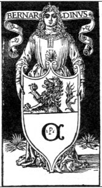

|
Ogni volta che si affronta il personaggio
di Antonio Fregoso, il poeta cavaliere che pass� la sua vita tra gli sfarzi
mondani della corte sforzesca e il ritiro agreste della villa di Colturano,
due argomenti oggi non più tanto contigui come la poesia e la storia tornano
invece ad accostarsi e ad intrecciarsi tra loro. Nel caso del Fregoso,
il rapporto si pone specificatamente tra la poesia e la storia cittadina
e regionale, quella del ducato sforzesco, le cui vicende traspaiono di
tanto in tanto dalle opere del poeta cavaliere nella forma di riferimenti
autobiografici. Ma in conseguenza del posto indubbiamente rilevante che
egli occup� nel mondo culturale ed artistico della Milano sforzesca, tale
rapporto non si esaurisce semplicemente nei suddetti riferimenti, per
altro assai interessanti, arricchendosi anche di altri aspetti e risvolti
finora poco esplorati.
Nella cerchia di eminenti poeti, umanisti, artisti e musicisti che fin
dalla giovinezza il Fregoso ebbe modo di frequentare, sappiamo essere
stato presente anche quel Bernardino Coiro, autore della prima storia
di Milano scritta in lingua volgare, nobile umanista milanese le cui vicende
presentano molti punti di contatto con quelle del poeta cavaliere, sviluppandosi
in modo pressoch� parallelo a queste. Uno sguardo alle vicende del Coiro
ci consente cos� di gettare nuova luce anche sulla drammatica congiuntura
storica in cui il Fregoso scelse di ritirarsi definitivamente nella villa
di Colturano, assumendo l'appellativo di Fil�remo, cio� "amante della
solitudine" per cambiare da quel momento vita e letteratura.
Compagni di giovinezza alla corte sforzesca
Apparentemente anch'egli ad una famiglia nobile e pressoch� coetaneo del
poeta cavaliere, il giovane Coiro inizi� la sua carriera di dignitario
e cortigiano in qualità di "cameriere ducale", termine che allora
non indicava affatto modeste mansioni di servizio, bens� un importante
e preciso incarico, quello di dignitario addetto a sovrintendere agli
appartamenti ducali. E' il Coiro stesso infatti a raccontarci di quando,
ancora adolescente, nel giorno della nativit� di Maria dell'anno 1474,
il duca Galeazzo Maria Sforza, dopo aver nominato cento nuovi cortigiani,
tra i quali il suo stesso genitore, scelse "cento camareri"
e di questi ne prese venti presso di s� affinch� lo seguissero costantemente.
"Nel numero di questi", racconta sempre lo storico, "fui
io, Bernardino Coiro, presente autore, l'anno quartodecimo de mia etate".
In quella stessa occasione � probabile che tra quei venti rampolli scelti
tra le famiglie più nobili del ducato, insieme a Bernardino ci fosse anche
il nostro Antonio Fregoso il quale, trasferitosi a Milano fin dal 1464,
� pure indicato con il titolo di "cameriere ducale" in un documento
del 1483. L'amicizia e la frequentazione tra i due personaggi potrebbe
dunque risalire ai tempi del comune apprendistato giovanile alla corte
sforzesca, consolidatosi ulteriormente, come vedremo, negli anni successivi,
in seguito ai condivisi interessi per gli studi umanistici.
La stesura della Historia di Milano
Dopo che nel 1484 i due giovani cortigiani ebbero entrambi preso moglie,
nell'anno successivo, in occasione di una "acerbissima pestilenza"
che colp� il ducato, anche il Coiro, come molti altri cittadini, fu costretto
ad allontanarsi da Milano per dimorare in un "loco solitario",
una villa di Niguarda (allora a due miglia da Porta Comasina, in aperta
campagna), in "uno ameno e piacevole podere" di sua propriet�.
Fu proprio in quell'occasione che egli pens� per la prima volta di dedicarsi
alla composizione di un'opera in volgare che a partire dalla "celeberrima
edificazione di quest'alma citt� di Milano", ricostruisse e facesse
conoscere a tutti le sue vicende "per duemila e cento anni fino a
quei tempi".
Seguendo le teorie storiografiche umanistiche, il Coiro intendeva essenzialmente
ispirarsi ai modelli classici di Livio e di Sallustio, perseguendo attraverso
la storia il fine di insegnare le norme morali implicite nelle imprese
dei grandi uomini e dei padri della patria. Ma il suo progetto mirava
contemporaneamente fin dall'inizio anche a uno scopo ben più pratico,
quello di esaltare con la citt� di Milano la dinastia degli Sforza, suoi
protettori. E infatti a partire dal 1485, quando ormai Ludovico il Moro
� già saldamente al potere, egli riceve alcuni incarichi e svolge delicate
missioni diplomatiche e politiche, ottenendo tra l'altro l'autorizzazione
a consultare per le sue ricerche gli archivi segreti ducali e le biblioteche
della citt� e dei più antichi monasteri, grazie ad uno speciale permesso
rilasciato personalmente dal Moro. Questi, da parte sua, non poteva ovviamente
non essere fortemente interessato alla realizzazione di un'opera che celebrasse
le imprese della dinastia in funzione propagandistica, sfruttando anche
le nuove potenzialit� offerte dalla stampa al fine di giustificare e rafforzare
il suo potere.
|
|
da IL MELEGNANESE
n.3/2000
sabato 12 febbraio 2000

Bernardino Coiro in et� giovanile.
Xilografia nella "Patria Historia" (Milano, A. Minuziano, 1503)
In un clima di grande paura, mentre intorno
a loro infuriano la guerra e le vendette dei Francesi contro i sostenitori
dell'ormai sconfitto Ludovico il Moro, i due umanisti, nella solitudine
delle loro ville, si scambiano opere di storia e di poesia. Fu appunto
grazie ai loro meriti letterari che i due amici, allontanandosi dalla
vita politica, ma non da quella culturale del tempo, riuscirono a superare
indenni la drammatica situazione.
|